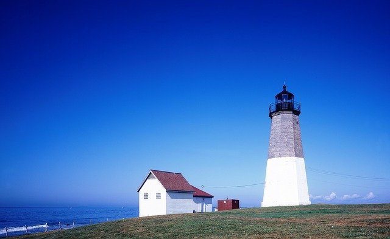

Rhode Island
While not a common answer to a request for someone's favorite vacation spots - Rhode Island is a beautiful place to see and should be considered more often.
Despite its size (the smallest state in the US!), it has quite a bit to offer. A nearly perfect summer climate and easy access to the ocean are just the start. Rhode Island is filled with historical architecture and beautiful must-see cities.
Any nature lover will find Rhode Island a great place to explore. More than half of the state is still forested, meaning plenty of unspoiled territory for wildlife observation. If you like birds take a visit to Block Island, where over 70 species of rare birds stop to rest during their migration.
Rhode island is a wonderful little state filled with nature and history. Anyone looking for a vacation with more outdoor time and less resorts would have a wonderful time there.